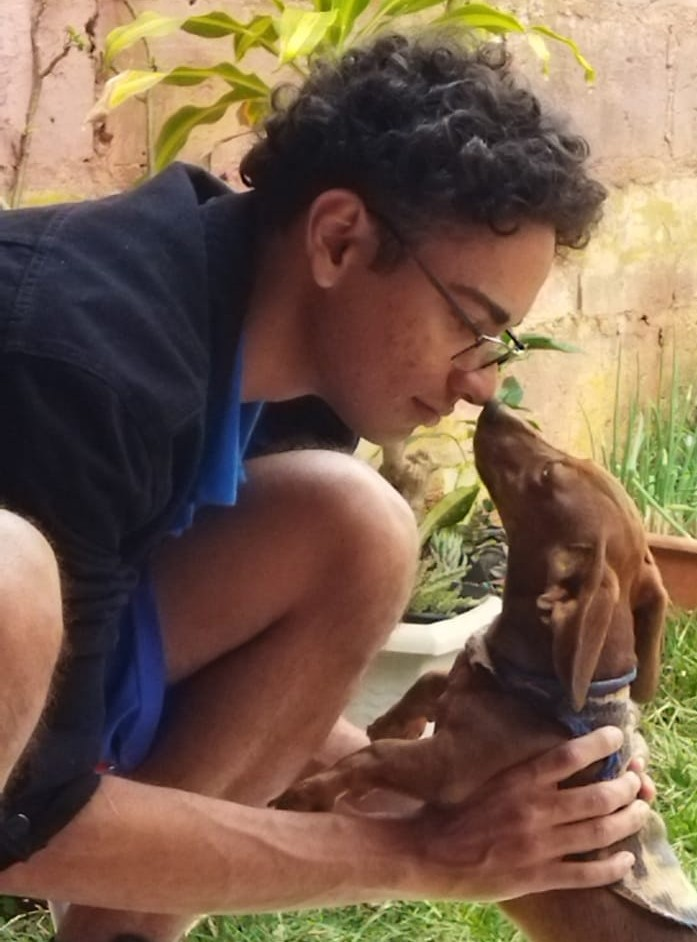

Cassiano Carvalho de Souza
Objetivo
- Atuar na área de Tecnologia da Informação, contribuindo com minhas habilidades em programação,
desenvolvimento de software e suporte técnico, enquanto desenvolvo ainda mais meus conhecimentos práticos e
acadêmicos.
Resumo Profissional
- Estudante de Ciência da Computação no 8º semestre com experiência acadêmica em desenvolvimento de
aplicações desktop, mobile e web. Conhecimentos sólidos em hardware, manutenção de sistemas operacionais e
linguagens de programação como Java, Python e C. Experiência com projetos acadêmicos que envolvem robótica,
redes e inteligência artificial.
Competências Técnicas
- Linguagens: Java (foco principal), Python, C, C++, JavaScript, HTML, CSS
- Tecnologias: Electron.js, Android (Java), Google Sheets API, desenvolvimento de jogos (Java), redes neurais(AlexNet, VGGNet)
- Sistemas Operacionais: Linux (Fedora, Ubuntu, Arch Linux), Windows
- Hardware: Montagem e manutenção de computadores, instalação de sistemas operacionais
- Outros: Git/GitHub, automação de tarefas, otimização de desempenho de software e sistema
Formação
- Bacharelado em Ciência da Computação — Universidade Federal de Mato Grosso do Sul
- Fev. 2022 – Cursando (8º semestre / 4º ano)
Cursos Complementares
- Hardware e Robótica — MICROCAMP (2018–2020)
- Montagem de computadores, manutenção, instalação de sistemas, fundamentos de robótica.
- Informática e Administração — CEDASPY (2019–2021)
- Pacote Office, edição de documentos, fundamentos administrativos e TI.
Projetos Acadêmicos e Pessoais
- Aplicativo Android (Java) para gerenciamento de informações de personagens de anime.
- Jogo Android (Java) com sistema de batalha envolvendo armas, habilidades e poderes especiais.
- Robô seguidor de linha com kit Cittus, programado via blocos, para competições escolares.
- Estudos em Redes Neurais com foco em classificação de imagens utilizando arquiteturas AlexNet e VGGNet.
Perfis e Portfólio
Idiomas
- Português: Nativo
- Inglês: Básico (leitura técnica)